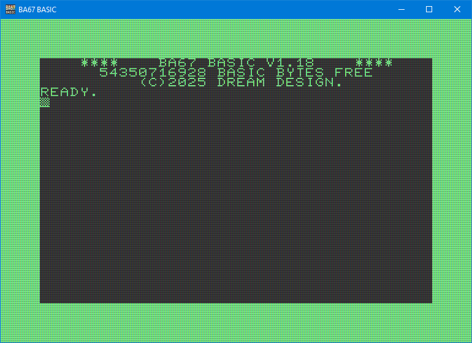

BA67
80s BASIC Interpreter
About
BA67 (pronounced BASIC SEVEN) is a standalone BASIC interpreter, that can be used as a daily tool on a personal computer.
It is inspired by the Commodore BASIC V7 ©1977 🐴 from the C128. Three times the digit 7 led to it's name BA67.

If you're familiar with the C64/C128, you will quickly find yourself comfortable with this interpreter. But BASIC is also a very easy to learn programming language as well as an operating system. So it suits perfectly for beginners as well.
Many have programmed BASIC interpreters before, so why another? Well, they all had some sort of limitations, or were written in some strange language that I don't like.
This BASIC is compatible with COMMODORE's BASIC V7, but also features some improvements.
Goal
Back in the 80s, everyone could start a computer and program a simple
10 PRINT "HELLO WORLD"
20 GOTO 10
These days there are so many languages and programs to install before the fun starts, that many do not even bother to try it.
The goal of this project is to get people to start programming.
It aims to provide a BASIC language, that sticks to a very widespread standard, keep backwards compatiblity and focus on an easy to learn language with easy to understand syntax and few keywords.
Keeping the backwards compatiblity also enables you to have AI generators answer your questions.
Complex operators, module definitions, structures and inheritance are excluded on purpose. Yet, the language should offer a modular approach for complex programs without introducing complex syntax.
The very final goal would be to have a standalone hardware, that boots to this BASIC.
It features a screen editor that should behave as the retro one does.
More
View the full README.md for details.